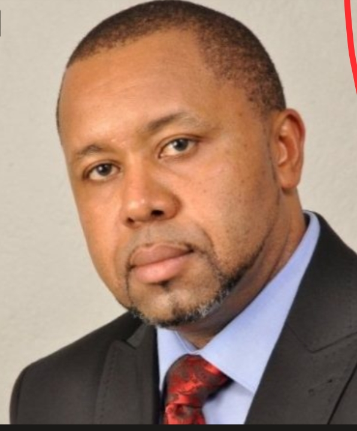

The life and Legacy of Dr. Saulos chilima
The vice presdent of Malawi (2014-2018 and 2020-2024)

Date of birth
12 February 1973
Education
Mtendere Secondary school :MSCE
- University of Malawi :degree in social science 1994
- University of Bolton in the United Kingdom :Masters of arts in Economics
Polical Leadership
- Running mate of Peter Muthalika candidate Democratic Progressive Party in May 2014
- Vice president of Malawi in 2014 to 2018
- Vice president of Malawi 2020 till death
Read more about Dr.Saulos Chilimaa